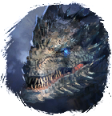
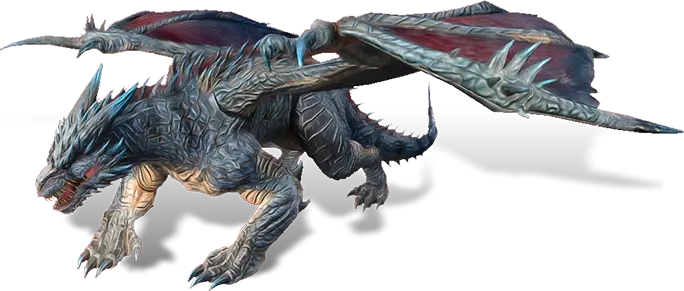

Открыть в интерактивной вики →

| Уровень | лёгк. 110 / норм. 130 / тяжел. 160 |
|---|---|
| Зоны атаки | ближняя, дальняя, ментальная |
| Шанс дропа 100% — уровни | лёгк. 1-90 / норм. 1-90 / тяжел. 1-120 |
| Шанс дропа 90% — уровни | лёгк. 91-100 / норм. 91-100 / тяжел. 121-130 |
| Шанс дропа 70% — уровни | лёгк. 101+ / норм. 101+ / тяжел. 131+ |
| Группа боссов | Тревога |
| Сила (PvE) | лёгк. 6553 / норм. 9420 / тяжел. 13 977 |
| Аспект | Solnai |
| Здоровье | лёгк. 43 000 / норм. 86 000 / тяжел. 156 000 |
| Мана | 17 000 |
| Выносливость | 17 000 |
Локация
- Логово Вальдарога
- Лежбище Вальдарога
Навыки

Дроп
 Ледяное ядро мощи
Ледяное ядро мощи  Большие фляги
Большие фляги  Глиф Подмастерья
Глиф Подмастерья 
 Путь тревоги
Путь тревоги 


 III-VI
III-VI  Гроссмейстерский глиф
Гроссмейстерский глиф  Даймонит 40
Даймонит 40 | Рары | Синергетики | Эпики | |||
 Рары Рары  Рары Рары  Рары Рары  Рары Рары | 30-70 ур. |  Эпики Эпики | |||
Прочее:  Путь тревоги Путь тревоги  Глиф Подмастерья Глиф Подмастерья  Фляги улучшений Фляги улучшений  Ледяное ядро мощи Ледяное ядро мощи | |||||
Требования для входа
Как добраться
Умения
- Групповой зев Групповой зев — кровотечение, замораживание, обычная атака
- Град Град — ледяной снаряд, групповая дальняя атака
- Групповое сопротивление менталу — массовая аура холода, отупление, очищение, повышение точности, усиление характеристик, замораживание, ледяной щит